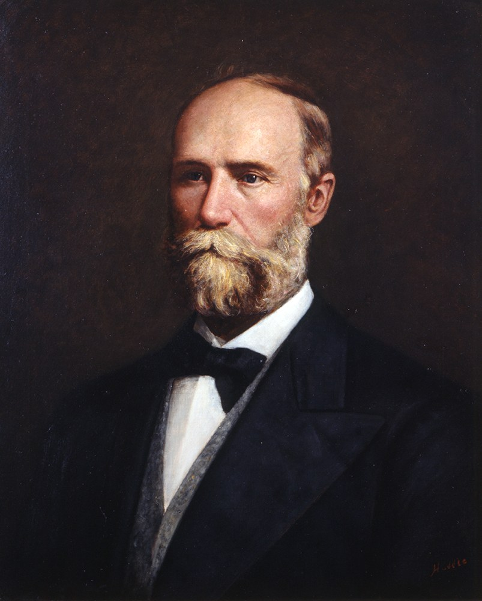

Explore Texas' unique executive branch where power is divided among many elected officials
Enter your name to begin your Texas executive branch journey:
Discover how Texas' "weak governor" system works and why it was created.
Learn about the history of Texas governors from 1845 to today.
Explore the constitutional requirements and duties of the governor.
Understand veto power, clemency, appointments, and budgetary authority.
See how the legislative and executive branches interact in Texas.
Discover the soft power and political influence governors can wield.
Meet all the elected officials who share executive power in Texas.
Master the essential vocabulary of Texas executive government.
In its 2019 session, the Texas Legislature failed to pass a "Sunset" bill that would have continued the existence of the Texas State Board of Plumbing Examiners. The bill had stalled amid controversy over whether or not to phase out this small agency and combine its functions into the larger Texas Department of Licensing and Regulation.
+30 points! 🎉 Real-world example revealed!
Without passage of S.B. 621, Texas faced an interesting problem. With no law requiring plumbers to be licensed and no agency to license them, anybody with a pipe wrench could now go into the plumbing business, performing jobs from replacing a kitchen faucet to complex medical gas piping in a hospital with no license and no training. Shortly after the session, legislators realized what they had done. Some legislators, plumbers, city plumbing inspectors and others began calling for a special legislative session to fix the problem.
+30 points! 🌟 Executive power in action!
Instead of calling a special session, Texas Governor Greg Abbott simply issued an executive order extending the existence of the state board through the next regular legislative session. "A qualified workforce of licensed plumbers throughout the state, including from areas not directly affected by Hurricane Harvey, will be essential as those funds are being invested in crucial infrastructure, medical facilities, living facilities, and other construction projects," he said in his order. By extending the board through the next legislative session or until "disaster needs subside," the governor was able to tap into sweeping powers given to his office to deal with natural disasters.
Partly because of many elected officials, the governor's powers are quite limited in comparison to other state governors or the U.S. President. In popular lore and belief the lieutenant governor, who heads the Senate and appoints its committees, has more power than the governor.

+35 points! 🎉 Governor's powers revealed!
The governor commands the state militia and can veto bills passed by the Legislature and call special sessions of the Legislature (this power is exclusive to the governor and can be exercised as often as desired). The governor also appoints members of various executive boards and fills judicial vacancies between elections. All members of the executive branch are elected statewide except for the Secretary of State (appointed) and the State Board of Education (each of its 15 members are elected from single-member districts).
+35 points! 🌟 Texas governors through history!
The first governor of Texas was J. Pinkney Henderson, who took over executive leadership from the final president of the Republic of Texas, Anson Jones, in 1846. Every governor from Richard Coke (1874–1876) to Dolph Briscoe (1973-1979) was a Democrat. Since George W. Bush's election to the governor's office in 1994, all four Texas governors have been Republicans. Texas was the first southern state to elect a female governor. Miriam Ferguson served two terms following the impeachment of her husband, James Ferguson, in 1917—the only Texas governor ever impeached. The second female governor, Ann Richards, served in the 1990s.
+35 points! 🗳️ Election process explained!
Texas elects governors in the midterm elections, that is, even years that are not presidential election years. For Texas, 2022, 2026, 2030 and 2034 are all gubernatorial election years. Legally, the gubernatorial inauguration is always set for the "first Tuesday after the organization of the Legislature, or as soon thereafter as practicable." If two candidates tie for the most votes or if an election is contested, a joint session of the legislature shall cast ballots to resolve the issue. The Texas governor currently receives a $150,000 annual salary, as well as living accommodations at the Texas Governor's Mansion.
+35 points! 🎉 Governor's roles revealed!
The governor makes policy recommendations that lawmakers in both the state House and Senate chambers may sponsor and introduce as bills. The governor also appoints the Secretary of State, as well as members of boards and commissions who oversee the heads of state agencies and departments. As the state's chief budget officer, governors submit an executive budget to the legislature as a plan for revenue and expenditure for the next biennium.
+35 points! 🌟 Appointment power explained!
During a four-year term, the Governor will make about 3,000 appointments. Most appointments are: state officials and members of state boards, commissions and councils that carry out the laws and direct the policies of state government activities; members of task forces that advise the Governor or executive agencies on specific issues and policies; or state elected and judicial offices when vacancies occur by resignation or death of the office holder. The majority of these appointments are volunteer positions, representative of our citizen government.
+35 points! 🎉 Timing rules revealed!
The governor must sign or veto legislation within 10 days of transmittal (excluding Sunday), or it becomes law without his or her signature. There is no "pocket veto" for the Governor of Texas. For legislation transmitted with less than 10 days left in the session, the governor has 20 days after adjournment to act, or the legislation becomes law without being signed. This latter provision allows a Governor to veto legislation after the Legislature has adjourned, with no opportunity for the Legislature to override a veto. In practice, a Governor's vetoes are rarely challenged.
+35 points! ⚖️ Clemency explained!
The governor has the authority to grant clemency upon the written recommendation of a majority of the Board of Pardons and Paroles. Clemency includes full pardons after conviction or successful completion of a term of deferred adjudication community supervision, conditional pardons, pardons based on innocence, commutations of sentence, and reprieves. In capital cases, clemency includes commutation of sentence to life in prison and a reprieve for execution. The governor may also grant a one-time reprieve of execution, not to exceed 30 days, without a Board recommendation.
+35 points! 💰 Budget power revealed!
The Governor has relatively limited budgetary powers. The Governor is required to submit an executive budget, but the Legislature typically ignores the Governor's budget, preferring to take the lead itself on budgetary matters. A Governor may attempt to influence the budgetary process through the power of persuasion, but this power is limited. In the end, a Governor's primary budget power is the power to veto or threaten to veto legislation.
The executive and legislative branches of government play an interesting tug-of-war with public policy in Texas in a slightly different way than in the federal government.
+30 points! 🎉 Budget process revealed!
The Texas Legislature has much more initial control over the budget process than the governor. The Legislative Budget Board (LBB), in which the governor plays no part, is an entirely legislative agency, and prepares the state's draft budget under the direction of legislative leaders. This legislature-driven budget, however, starts from a number generated by a different member of the executive branch—the Comptroller of Public Accounts. The Comptroller's BRE (biennial revenue estimate) is the initial estimate of what the state's total revenue will be over the two-year budget cycle.
+30 points! 🌟 Rulemaking power explained!
While the legislature has the sole power to make law in Texas, executive branch agencies have significant latitude to interpret state statutes through agency rulemaking. Legislators, aware and somewhat wary of this, require a special statement attached to the official analysis of every bill considered on the floor of the House or Senate disclosing whether the bill delegates any rulemaking authority to any state official or agency.
+30 points! ⚖️ AG Opinions explained!
The Texas Attorney General also brings some interpretive power to the equation. With the power to issue a formal Attorney General's Opinion, this official can sometimes make public policy decisions separately from the legislature, and without the judicial branch. An Attorney General's Opinion in Texas has the force of law until a court rules otherwise, or the legislature changes the law on which the opinion is based.
A Governor's powers are not limited to their constitutional and statutory authority. In addition to the formal powers of the governor and other executive branch officials, a smart governor can accomplish a lot using informal powers.
+30 points! 🎉 Personal relationships matter!
Governor George W. Bush was legendary for his ability to forge genuine friendships with other state officials—notably House Speaker Pete Laney and Lieutenant Governor Bob Bullock. The three had breakfast at the Governor's Mansion weekly during legislative sessions. When he announced his candidacy for the Republican nomination for President in 1999, Speaker Laney, a Democrat, introduced him. Friendly late night meetings over a beer or two helped Governor Bush and some of his staunchest political opponents find common ground on a variety of policy issues.
+30 points! 🌟 Political influence revealed!
The Texas Governor has the highest-profile role of any state official and can use that to his advantage. An endorsement from a governor can mean a lot in a race for the state house or senate, and a grateful legislator should be eager to return the favor. Conversely, Governor Greg Abbott actively worked against the reelection of two legislators from his own party in 2018—helping to defeat one.
+30 points! ⚡ Post-session veto power!
The governor's appointment power to appoint members to boards, commissions, councils, and committees can provide the governor with significant informal power over policy in many key areas. The executive branch of the Texas government is made up of over 400 state boards, commissions, and agencies. Finally, the governor's unilateral post-session veto power creates a lot of informal leverage during the legislative session. A legislative bill author asked by the governor to support a change to his bill—even a drastic one—has little alternative, knowing the bill can be vetoed with no opportunity for an override vote.
Texas fragmented the Governor's power at the end of Reconstruction and dispersed executive power by creating a plural executive. Article 4 of the Texas Constitution describes the executive department (branch) of Texas. Texas utilizes a plural executive which means the power of the Governor is limited and distributed amongst other government officials.
Currently: Dan Patrick
Technically a member of the executive branch, but with duties that are mostly legislative. Serves as the state senate's presiding officer—not in a ceremonial role, but as the state senate's day-to-day leader. First in line of succession for Governor, member of the Legislative Redistricting Board and Chair of the Legislative Budget Board. Elected statewide for a four-year term.
+35 points! ⚖️ Attorney General revealed!
The Texas Attorney General (currently Ken Paxton) serves as the official lawyer for the State of Texas representing the state on civil matters and is responsible for interpreting the application of statutory law in the absence of an applicable court ruling. His office has additional duties relating to child support enforcement and consumer protection. Elected to a four-year term statewide.
Currently: Dawn Buckingham
The state's real estate asset manager. Texas, as a condition of admission to the United States in 1845, maintained state ownership of vast amounts of public land. The leasing of public land for everything from oil exploration to grazing has been an important source of funding for state universities and public schools. The land commissioner is also responsible for Texas' 367 miles of Gulf Coast beach and has played an increasingly central role in managing disaster relief funds since Hurricane Harvey in 2017.
+35 points! 💰 Comptroller's power revealed!
The Comptroller of Public Accounts (currently Kelly Hancock) is the state's independently-elected chief financial officer. Even if passed by the legislature and signed by the governor, the state's biennial budget cannot take effect unless "certified" by the Comptroller—his official finding that the budgeted amount will not exceed the amount of revenue he believes the state will collect during the budget period. The Comptroller is also the state's tax collector and banker.
Currently: Sid Miller
Elected to both promote and regulate Texas agriculture, which some perceive as a potential conflict. Administers the Texas Agriculture Department, the duties of which include weights and measures—including gasoline. Inspectors check every gas pump in Texas periodically to make sure consumers are receiving the amount they purchase.
+35 points! 🛢️ Railroad Commission history!
The Texas Railroad Commission consists of three commissioners, all elected statewide, who serve staggered six-year terms. The current commissioners are Wayne Christian, Christi Craddick, and James Wright. Originally created to regulate intrastate rail commerce, that task was largely assumed by the federal government. During the Great Depression, the Commission was given the responsibility of regulating the Texas oil industry. By setting an "allowable" for every oil well in Texas—the maximum amount that could be legally extracted—the Texas Railroad Commission basically set the global price of oil for many years. The Organization of Petroleum Exporting Countries (OPEC) used the Texas Railroad Commission as their model for creating a worldwide oil cartel in 1960.
15 members elected from single-member districts
The largest elected body in the state's executive branch. Charged with setting curriculum standards, reviewing textbooks, establishing graduation requirements, overseeing the Texas Permanent School Fund, and approving new charter schools. Works with the Texas Education Agency, which is administered by a Commissioner of Education appointed by the governor.
Appointed by the Governor
Not elected but appointed by the governor and confirmed by the state senate. Has a variety of duties, including administration of elections within Texas, publishing the Texas Register (which notifies the public of proposed and final state agency rules), and advising the governor on border matters. Also presides over the Texas House of Representatives at the beginning of each legislative session.
Master these essential terms to understand the Texas executive branch.
+30 points! 🎉 Glossary mastery!
Understanding these terms is essential for comprehending how Texas' unique plural executive system works. Unlike the federal government where executive power is concentrated in the president, Texas deliberately fragments power among many elected officials. This system was created after Reconstruction to prevent any single person from accumulating too much power—a direct reaction to Governor E.J. Davis's administration.
Chapter 5: Texas' Governor & Plural Executive
| Section | Topic | Status | Points | Time |
|---|---|---|---|---|
| 1 | Introduction: The Executive Branch | ❌ | 0/170 | --:-- |
| 2 | Background and History | ❌ | 0/215 | --:-- |
| 3 | Qualifications and Roles | ❌ | 0/180 | --:-- |
| 4 | Governor's Powers | ❌ | 0/215 | --:-- |
| 5 | Legislature and Executive Interplay | ❌ | 0/170 | --:-- |
| 6 | Informal Powers | ❌ | 0/170 | --:-- |
| 7 | The Plural Executive | ❌ | 0/215 | --:-- |
| 8 | Key Terms and Glossary | ❌ | 0/140 | --:-- |
Instructor Note: This report documents the student's completion of Chapter 5: Texas' Governor & Plural Executive. Time spent per section is tracked automatically—sections completed faster than expected will trigger a pacing alert.